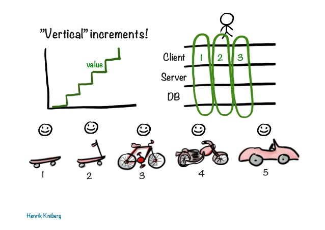
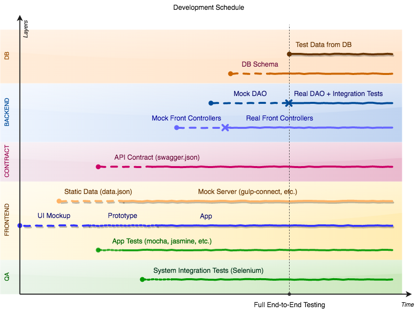

UI-First Development
One of the challenge for start-up or any new project is to reduce amount of work yet to deliver full-featured product. Agile methodologies address this challenge on project management level. Let’s discuss one more approach to address it on architecture level: UI-first development.
Delivering prototype to the client early is very important to project success. Client may have only general idea of a product he needs and prototyping may save a lot of time and efforts of the team by reducing amount of unnecessary work. Thus building applications ground-up may be bad idea.
The issue with ground-up approach (from data model to UI) is that Client can not see the product immediately. Many user scenarios remains hidden. Accordingly, some not-the-cases will most likely be implemented by developers since they (and product owner) are usually don’t understand user requirements completely due to miscommunication, which is hard to avoid.
By the time when Client gets first working prototype, a lot of work has already done both on front-end and back-end side. And if the prototype does not meet the client’s expectations, then this work is to be thrown away. The indicator of such situation is if significant changes are done to data model after first version presented to client.
Agile methodologies can mitigate the problem: 
In iterative development with short iterations, each iteration adds some value. Client-side, server-side and persistence level are changed together in order to add new functionality. And the Client should be always happy, even having with a fraction of MVP.
The question is: «Should Client be happy with a skateboard?» In a real world Client may need to try a «bicycle» before he can say that it looks similar to what she expects to have at the end.
In such conditions of uncertainty the top-down approach i.e. UI-first Development may be a better solution. I think it’s even more «agile» way since Client’s feedback is collected earlier, reducing unnecessary work of the team.
Development Plan
Let’s assume, we’re going to develop a web application consuming REST/WebSockets API from back-end server. Following diagram shows how development phases can be scheduled on a timeline: 
{kind=link}
1. UI Prototype
Actual development starts with web application prototyping. First UI mockups are created and presented to Client. This is typically an single page application (SPA) written using some component framework like Angular or React. Some visual prototype or screen mockups may help to initial version quickly.
And it’s really funnp phaseof the development: you make something which looks like real and make it quickly!
In their book «The Pragmatic Programmer» Andrew Hunt and David Thomas separate concepts of «prototype» and «tracer code» or «tracer bullets». The difference is that prototype must be replaced with real production code, but tracer code is not: you write it for keeps. Pragmatic approach is to mix prototype and tracing code and refactor and re-write prototype over time.
2. Add Some Static Data
When initial application structure is clear, it’s the time to add some data.
This should not be a real data as there is no real backend to provide it.
It’s enough to create some static JSON files and serve them under /assets or /data along with JS application.
3. Start Defining API Contract
Static data is foundation of future API specification (contract). The most popular format for writing API specifications is OpenAPI/Swagger. It suites well for most common cases. Some aspects, like inheritance, are not clear enough in specification, but this format is widely accepted in the industry so it’s a default choice. Other formats for describing REST API are API Blueprint, Mashape, Mashery I/O Docs.
You can automatically generate and publish API reference documentation and SDKs from API specification. You can use it in your internally and you may publish it later when you decide to make your API public. Every specification format of your choice has tools you can use to generate HTML documentation.
4. Time for Testing
Now, when you feed your UI-application with static data, it’s time to write some tests. You may start testing some base functionality you’re confident with. Web developers may start testing web components using JS-stuff like mocha, jasmine or similar framework.
It is impossible to cover all the cases without real application server. Also, it is very difficult to test requests sent by UI application. But you can test simple scenarios like: «WHEN user requests some url THEN expected data is shown on page».
5. …Even for System Integration Testing
Web-application functional end-to-end testing with test data can be done by web developers.
System integration testing is done by the same team or by QA team together with web and back-end developers, if you have separate teams for front-end and back-end. It usually covers complex user interaction scenarios.
Common tool used for system integration functional testing is Selenium. Sometimes it is also necessary to develop some extra tools for direct access to underlaying data for setting expected state for tests and test doubles to emulate external system. Often a team may end up designing custom test DSL to simplify writing this kind of tests
It’s a long way to go, but even now, it’s possible to star writing some simple tests.
And it is now possible to start creating System Integration tests. Even you have no back-end yet, you defined an expected data in static files so there is nothing preventing from using a heavy stuff like Selenium.
6. Establish Test Automation and CI
We have a contract (API specification) and test data in static files (data should match the contract or should be auto-generated). We have also some system integration tests.
It’s a good time to setup deployment and testing automation so your prototype is always deliverable. We don’t need to implement services and data layer so far.
7. Starting Back-End: Mock Controllers
Now we need a back-end and full deployment cycle to test both front-end and back-end together. From a API specification we may generate data transfer objects and interfaces of front controllers. Then we should implement controllers so they return the same test data. Mock controllers are enough. They may serve the same static data you already have.
The most important that after completing this step our system integration tests should run against real UI working with real server. And tests should be «green».
8. Continuing Back-End: Controllers and Mock DAO
Now it’s time to implement services, one by one. Database is still not necessary – you can mock persistence (DAO) layer. The tests still should be green and we may add more tests now since we have Services now.
9. Continuing Back-End: Real Database and DAO
Now we should design our persistence layer, create DAO add (same) test data to database so the tests are still green. After that we’ll have all components in our system:
- (End-to-end Tests)
- Web Application
- REST API Specification
- Backend: Controllers, Services, DAO
- Database
Now, when initial setup is completed («iteration zero») we can let’s continue with Sprints short interactions affecting all system layers.
Final Notes
It’s just an idea of how to minimize unnecessary work in conditions of business uncertainty. Don’t use this instruction blindly, it may not applicable to your case.
Links
- «UI-First Software Development» and «The Prototype Pitfall» by Jeff Atwood
- «Tracer Bullets and Prototypes» A Conversation with Andy Hunt and Dave Thomas, Part VIII by Bill Venners, April 21, 2003
- «The Pragmatic Programmer» by Andrew Hunt and Dave Thomas
- «Paper Prototyping: Getting User Data Before You Code» by Jakob Nielsen
- «What is Agile» by Henrik Kniberg
- «Writing Software» by David Heinemeier Hansson (video, RailsConf 2014) - good idea to test on higher level of abstraction.